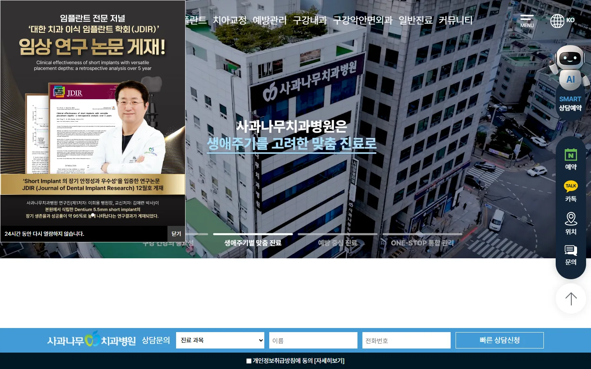
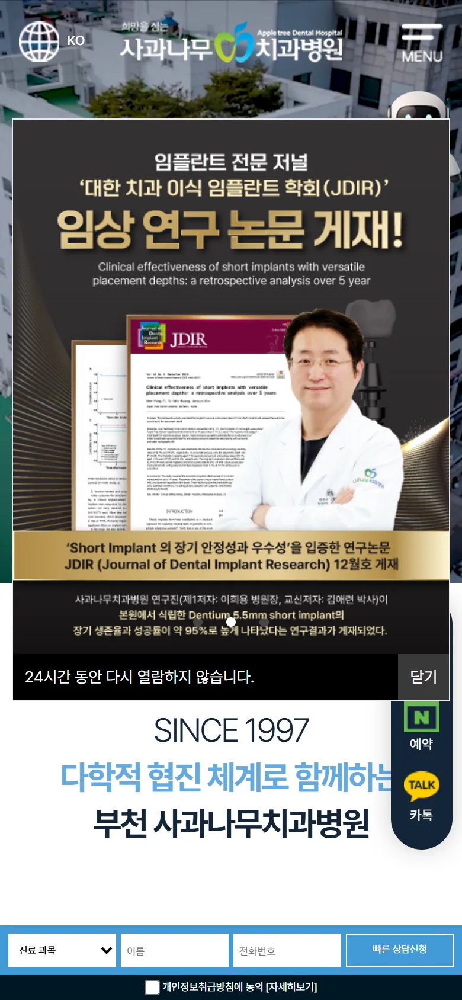
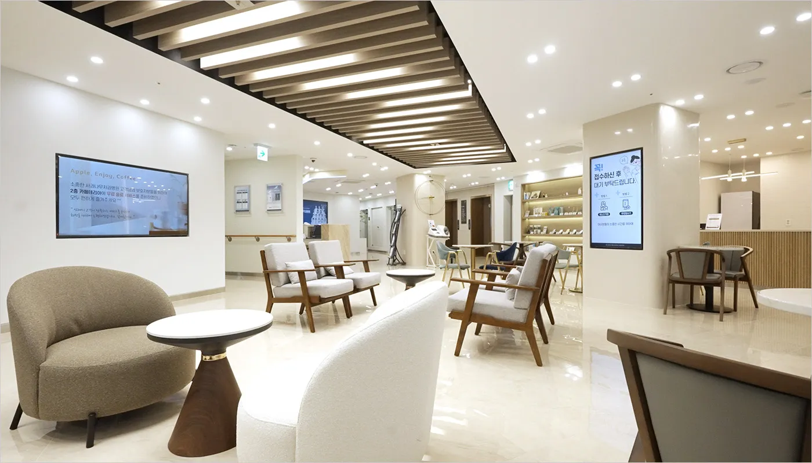
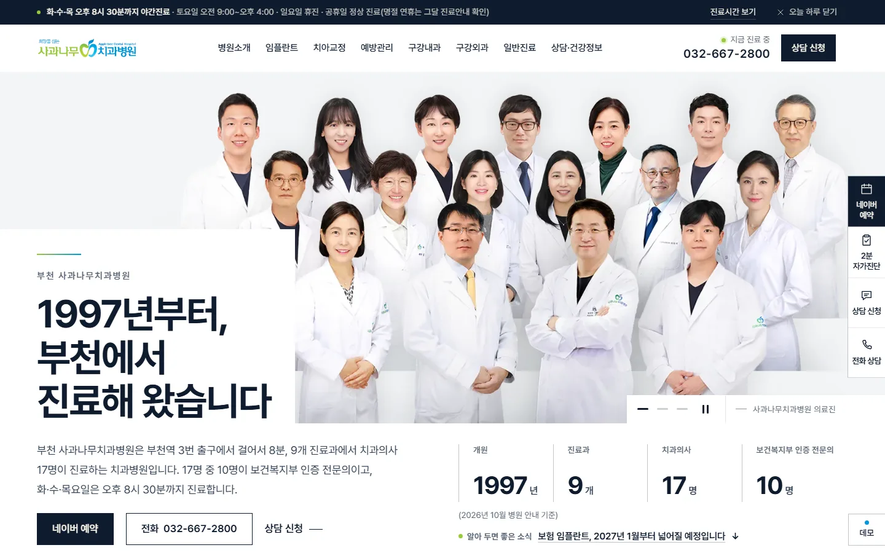
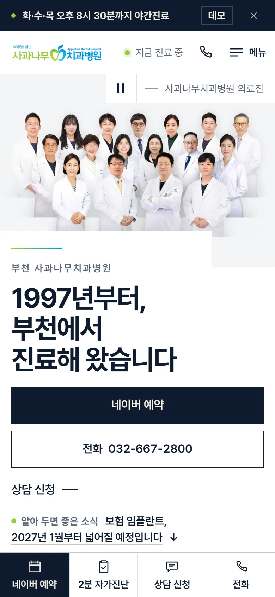

원본appledental.kr


- 팝업 1개가 첫 화면을 가립니다(PC 화면의 약 21%, 휴대폰 화면의 약 55%).
- PC에서는 팝업이 로고와 메뉴 앞부분을 가립니다.
- 팝업 그림 3장(채용 공고·논문 게재·교정과 소식)과 배경 사진·문구가 몇 초마다 바뀝니다.
- 휴대폰에서는 오른쪽 고정 버튼이 첫 화면 문구 일부를 가립니다.
리뉴얼 시안 보고 2026년 10월
환자와 AI 검색이 질문의 답을 바로 찾을 수 있도록, 병원 홈페이지를 처음부터 다시 만들었습니다.

03모바일 화면
휴대폰 너비(390px) 그대로입니다. 아래쪽 고정 바에서 네이버 예약·2분 자가진단·상담 신청·전화를 바로 누를 수 있습니다.
04원본과 비교
같은 크기로 찍은 첫 화면입니다. 원본은 2026년 10월 14일, 팝업이 가린 모습 그대로 찍었습니다.




원본·새 사이트 모두 2026년 10월 14일에 같은 크기로 찍었습니다. 새 사이트는 데모(검색 노출 차단) 화면입니다.
화면 뒤에서 검색엔진과 AI 답변 엔진이 읽는 파일과 표식을 비교했습니다. 원본은 2026년 10월 14일에 직접 열어 확인했습니다.
비교표를 불러오는 중입니다.
AI 답변 엔진이 병원 페이지를 읽고 인용하기 좋은지 그로스메이트로 점검한 결과입니다. 실서비스 전환 전후로 재서 이 칸을 채웁니다.
원본 appledental.kr
측정 예정
새 사이트(시안)
측정 예정
아직 측정 전입니다.
05달라진 것
환자에게는 필요한 답을 빨리 보여 드리고, 병원에는 상담과 통계를 한눈에 보여 드리도록 만들었습니다.
진료시간·주차·보험 임플란트·사랑니 발치처럼 환자가 실제로 묻는 질문 20개에 한 쪽씩 답했습니다. 첫 문단이 바로 답이라 AI 답변이 그대로 인용하기 좋습니다.
불편한 곳 6가지 가운데 하나와 연령대를 고르고 질문 10개에 답하면, 진료가 얼마나 필요한지 4단계로 알려 드립니다. 이름·연락처는 묻지 않습니다.
문항은 의료진 검수 전 예시입니다.
상담 신청, 자가진단 통계, AI 노출 현황을 관리자 화면에서 한눈에 봅니다. 데모는 예시 데이터로 채웠습니다.
페이지의 큰 구간마다 이름표를 달았습니다. 어느 구간을 본 뒤 전화·네이버 예약·카카오톡·상담 신청으로 이어졌는지 그로스메이트가 모읍니다.
AI 검색 로봇이 먼저 읽는 안내 파일입니다. 페이지마다 한두 문장 요약과 주소를 한 파일에 모았습니다. 원본 사이트에는 없습니다.
병원 정보(주소·전화·진료시간), 페이지 위치, 화면에 보이는 질문과 답을 검색엔진·AI가 읽는 표식으로 붙였습니다. 화면에 없는 질문은 넣지 않습니다.
의료법 제56조에 맞춰 효과를 보장하는 말, 다른 병원과 견주는 최상급 표현, 가격으로 환자를 끄는 문구, 치료 경험담을 쓰지 않습니다. 글을 고칠 때마다 점검 도구로 다시 확인합니다.
원본 사이트에서 받은 병원 실제 사진 567장 가운데에서만 골라 씁니다. 연출 모델 사진과 전후 비교 사진은 쓰지 않습니다.
병원 공식 로고 파일 3종을 그대로 씁니다. 다시 그리거나 색을 바꾸지 않았습니다.
06다음 단계
지금은 검색 노출을 막아 둔 데모이고, 상담 신청도 병원에 전달되지 않습니다. 아래 여섯 가지를 마치면 appledental.kr 주소로 운영할 수 있습니다.